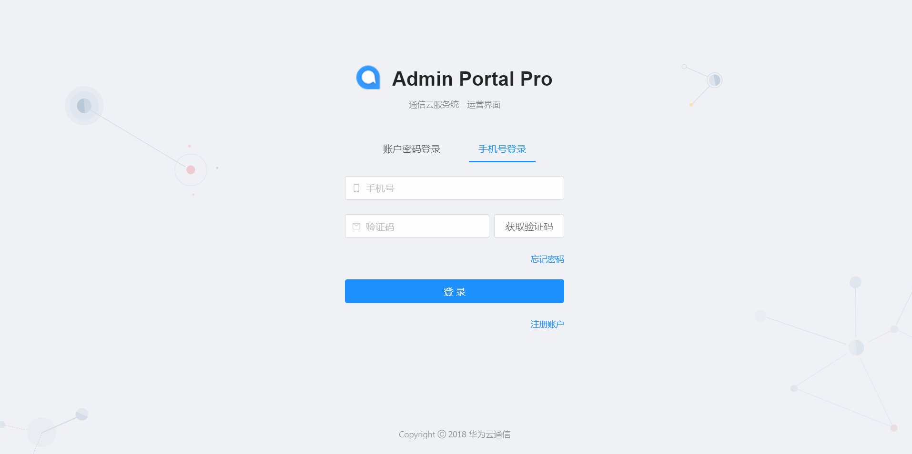
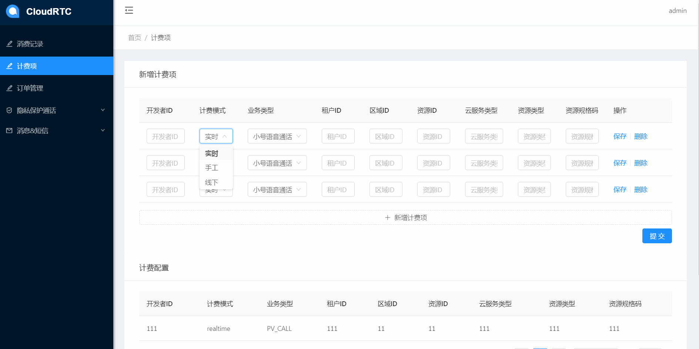
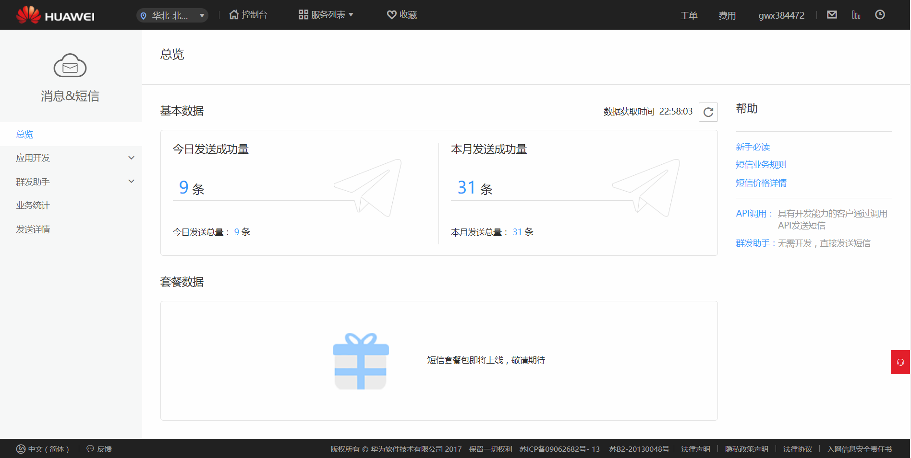
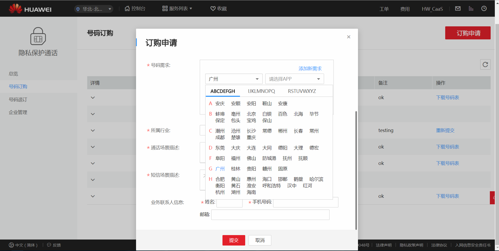

江 雷
前端工程师
电话:15629053975
- 邮箱: jarrelljl@163.com
- QQ: 364002527@qq.com
- About me
- 我是一个充满活力、热爱互联网、善于发现问题并乐于解决问题的人。喜欢接触新技术，学习能力强，具有良好团队合作意识和沟通能力。独立做过多个项目，熟悉常见业务需求中的前端解决方案，热爱前端生态。
-
- Experience. 项目与工作经验
深圳中软国际科技有限公司（2016.11 - 2018.11） 前端开发
-
华为云通信运营管理平台 https://117.78.42.13:23000
1.个人独立搭建和开发的华为云通信服务的运营管理平台，支撑运营人员进行相关业务操作。业务功能包括登录、权限管理、订单管理、运营商管理、手工扣费、自定义导出等。
2.技术栈:react+react-router+redux+antd+dva+fetch+webpack+css modules+flex等。
3.平台运行良好，能快速改良功能缺陷，并能及时跟进业务需求进行功能的开发与更新，同时基于react和antd封装了适用于业务需求的组件(条件查询组件、文本自动隐藏组件等)，实现了复杂表单的数据处理，对react技术栈有了更深刻的理解。
 -
华为云通信门户 https://www.huaweicloud.com/product/cloudcomm
1.包含业务介绍页面以及用户控制台，目前包含三个云通信服务，支持企业用户进行业务统计、业务开通、号码订购等操作。
2.技术栈:angularjs+ui-router+requirejs+echarts+jQuery+bootstrap+tinyUI等。
3.个人负责80%页面的开发，实现了多种页面交互效果，使用requirejs配合angularjs实现模块化以及单页面的开发。基于jQuery ajax和angularjs service封装了支持promise的ajax库，并支持loading效果。
 -
云通信配置管理系统
1.基于vue-cli搭建的后台配置系统，用于进行业务参数配置。功能模块包括登录、用户管理、接口参数配置、日志记录等。
2.技术栈:vue.js+vue-router+vuex+element-ui+axios等。
3.短时间内熟悉Vue生态并着手开发的后台管理控制台，实现了常见的业务需求。
武汉云竞信息技术有限公司（2015.9 - 2016.10） 前端开发
-
参与公司内部电子商务系统的前端开发，包括供应商管理、采购、产品列表、月报表等几大功能。
-
编写商品详情页面，根据优化需求，进行系统页面的更新和维护。完成了从DOM操作到数据驱动视图更新的转变。
-
主页使用Bootstrap和AngularJS实现前端组件及数据交互，商品详情页使用jQuery/jQueryUI设计实现，基于highcharts.js完成图表的创建。


个人项目
-
贪吃蛇AI https://jarrelljiang.github.io/snakeAI
1.应该是全网第一个用JavaScript实现的贪吃蛇AI，并能吃满全图。运动轨迹还有优化空间。
2.基于JS实现的BFS算法和DFS算法，原生JS操作DOM，完成了路线的核心算法以及游戏界面。主要难点在于：最短路线的选取、近似最远路线的选取、临界情况的处理、虚拟路线、辨别无效路线等。


-
文件上传下载的web应用
1.Node.js+Express+jade(pug)+vue.js实现的支持文件上传、下载、删除的简单web应用。
2.vue.js实现表单的双向数据绑定，dronzone.js实现文件拖拽上传、下载，可自定义传输容量。
2.熟悉了Node.js的常见API以及模块、Express的路由及中间件及jade模板引擎的使用。


-
- Skill. 技能清单
-
熟悉前端标准与规范，熟练使用HTML、CSS(less、scss)，实现自适应页面的复杂布局与动画，并且兼容主流浏览器。
-
熟练掌握原生JavaScript(包括EcmaScript6)、JS中的面向对象及jQuery库，基于DOM操作开发过界面相对复杂的页面。
-
熟悉前端工程化生态，包括React/Vue技术栈，配合ant-design/element-uiUI库有过实际项目开发经验，熟悉gulp、grunt、webpack等构建工具。
-
掌握AngularJS框架，配合requirejs及ui-router在早期开发过模块化的单页面应用。
-
熟悉前端工程化相关Node.js技能及其常用API，了解Express框架，实现过简单的web应用。
-
有过echarts和highcharts的使用经验，了解基于canvas和svg的数据可视化技术，对图形界面感兴趣。
-
工作过程中接触过java和php后端技术以及MySQL和MongoDB数据库、HTTP协议。熟悉Git版本控制系统。